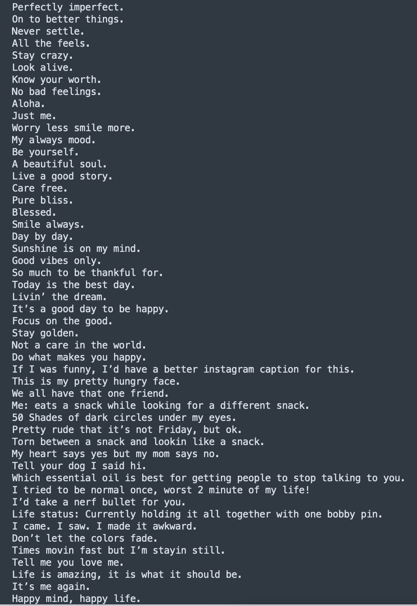
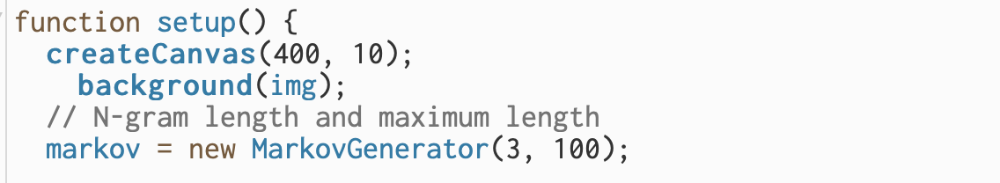
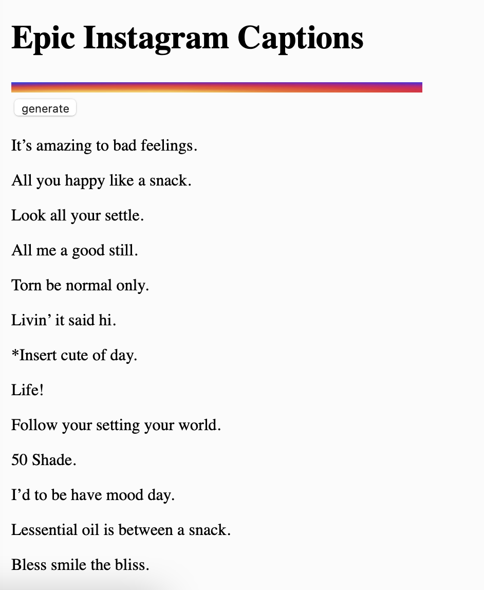
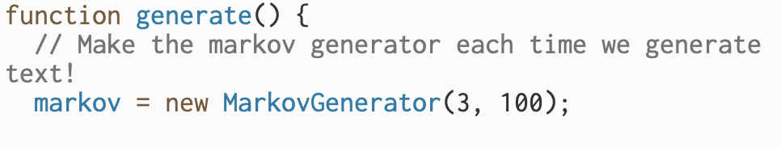
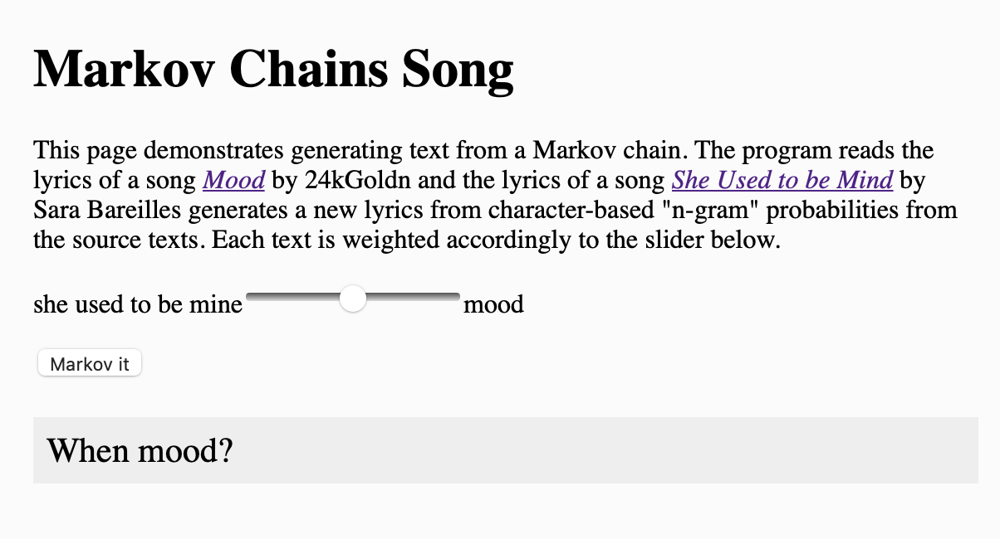
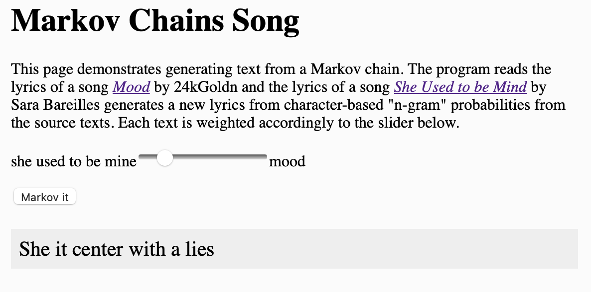
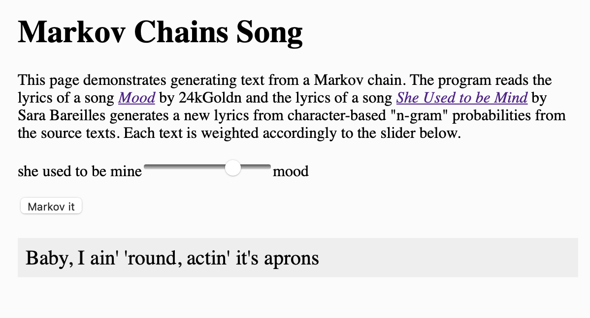
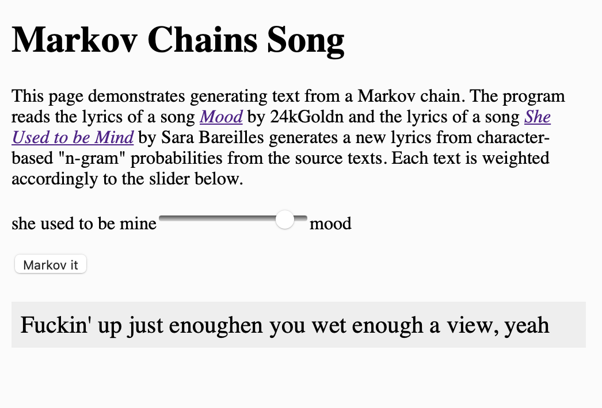

Markov chains, named after Andrey Markov, are mathematical systems that hop from one "state" (a situation or set of values) to another. A Markov chain tells you the probabilitiy of hopping, or "transitioning," from one state to any other state---e.g., the chance that a baby currently playing will fall asleep in the next five minutes without crying first. In short, it is a fairly common, and relatively simple way to statistically model random processes. It have been used in many different domains, ranging from text generation to financial modeling.
For this week, I have watched video tutorials on Markov chains:
and experimented with the existing
examples to generate text with my own twist. I have replaced the input data and adjusted the "order" and "maximum" length variables.
Adapting
markov by character example , I used markov chain to generate the best Instagram Captions.
When posting Instagram post, I always think carefully on the caption for the image. I want my caption to well encapsulate the image but also whitty and playful. I have searched "the best instagram caption" on Google and got the list of instagram captions and quots for instagram photos.
here
Here is the list of recommended instagram captions in the text file format.

I have added this file as a reference file, and run the code. I have also changed the N-gram lenght and the maxium length as below:

Here are the strings of text I got when I ran the code and generated texts.

Some of the words were grammatically incorrect and incomplete, but there were many sentences that are grammatically correct but fun to read. I have run the code several times and got a number of epic outcomes!
some of the interesting setences I got are:
- Worry life.
- Sunshine bobby day.
- Life is my eyes.
- A best dog I made.
- Me: eats amazing people it is beautiful sould between a care free.
- Your double looking you.
- Be alive.
- Good day, but once, worth.
Adapting
Markov Mixer Example , I have made the remix of the two songs using markov chains.
I have chose two of my favorite songs with different style and mood to make it more interesting.
- She Used To Be Mine - sara bareilles
- Mood - 24kGoldn
This is the generate function I set for this remix program.

Here are some of the resulting outcomes of the lyrics!




The markov remixed lyrics were really interesting. In future, I would like to plug in the notes and the rhythms of the songs and use this markov chain system to randomly generate notes and rhythms. In this way, people be able to create and listen to a song randomly remixed by markov chain system.